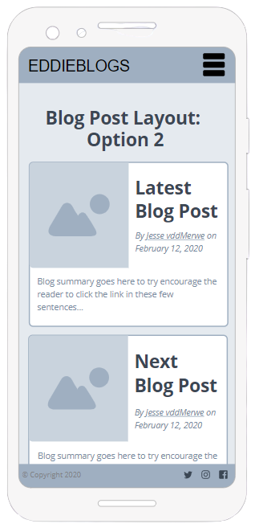
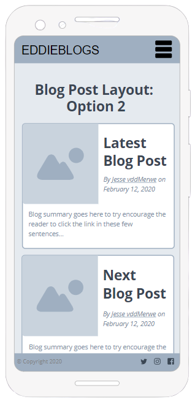

Blog: Wireframe Development and General Website Planning
By Jesse van der Merwe,
Wireframe Development
User Interface Research and Goals
I believe that the two most important pages in terms of User Interface (UI) of my website is that of:
- My home page
- My blog post main page
The focus of this blog post is to try and decide on a layout for the blog post main page. This page is super important because it is where the user is exposed to all the various blog posts that I have written. If these blog posts are not displayed in a visually pleasing way, then users are not going to click on the blog posts, which means they are not going to read the blog posts... :(
I did a bit of research about the User Experience and User Interface. I really enjoyed and took lots of inspiration from the webflow.com "10 essential UI (user-interface) design tips", as well as uxdesign.cc "9 tips to quickly improve your UI designs".
I have come to the conclusion that the following are important to include/think about:
- Ensure expectations are always made clear. Examples include:
- Highlighting buttons
- Using the corresponding cursor for all parts of the page
- Using appropriate colours (i.e. don't use green for stop/bad/no)
- Anticipate user's mistakes:
- Prevent the mistakes as much as possible
- Provide ways to easily fix any mistakes after they happen
- Make sure your error messages are crystal clear
- Feedback feedback feedback!!!
- Fast loading times
- If that can't happen, display a visualization that makes the loading time less boring
- But perhaps don't use an actual loading bar... as this might make the loading time seem longer, therefore use a visualization that doesn't imply progress.
- The closer and/or bigger something is, the faster you can put our cursor/finger on it
- Make buttons and icons big enough to easily see and click
- Make buttons for the most common actions larger and more prominent
- Place commonly interacted with elemtns on the edges/corners of the screen so that it lessens the need for accuracy (i.e. a user doesn't need to worry about overshooting when clicking/tapping)
- Horizontal scrolling is unusual... and therefore needs big and obvious cues for the user to be able to predict and use it without confusion
- Stick to standards!!!
- Make sure all elements are clear and well defined
- A "cheat" is to use drop shadows or a super subtle border to make elements appear sharper
- NB: Shadows must all come from one light source!!!
- Use nice big fonts, especially for long-form content
- If there is a "tutorial" experience - allow users to skip it!
- Use subtle overlays (usually just a black transparent colour) to improve the contrast between the any text that is on top of another image
- White space is your friend!
My Blog Page Wireframes
Armed with the above information I decided to draw up a few Blog Post Main Page wireframe ideas. The first draft of each was drawn by hand in my trusty Typo notebook. I then used moqups.com to make a digital and more accurate depiction of each wireframe. The goal of this was to be able to visually study and decide on which version is best suited for my website.
Wireframe Idea 1

The first idea is focused on keeping the display clean and simple - only using pictures and blog post titles to try and peak the reader's interest. As seen in the hand-drawn wireframe above, the main problem with this is the fact that the images drawn are very lightly coloured and do not look great with text on top of them. There is also no information provided about the blogs and I worry that the titles are not descriptive enough.
The hand-drawn wireframe was converted into a digital version, seen above. I admit I really like this format and look, as it is very clean looking. However, I do not think it is right for my blog.
Wireframe Idea 2

This second idea is focused on providing more information to the reader about what the blog is actually going to be about. However - especially with the images that I am using - the very small image makes it hard to see the detail, which is an important feature.
 

The hand-drawn wireframe was converted into a digital version, seen above. This format solves the problem of not providing enough information to the user, however, I do not think it is right for my blog.
Wireframe Idea 3

This third idea is a culmination of the previous two ideas; there are large images, but with space to provide more detail about the blog if necessary. However, this idea requires horizontal scrolling, which is quite unnatural for the user since almost all websites scroll vertically. Another issue is that the mobile view can only see one blog at a time - and thus has to scroll (or 'swipe') through all of them to find any one particular one.


The hand-drawn wireframe was converted into a digital version, seen above. This format solves the problem of not providing enough information to the user, as well as not having a big enough image. There are also two options for the mobile view. The first option requires horizontal 'swiping' to scroll between blogs, while the second lets the user simply swipe up and down to scroll to the other blogs. While the horizontal 'swiping' might be nice in mobile view, I do not like how it limits the user's view of the blog posts - they can only see one at a time. I think the vertical scrolling will be too tedious as there are many blogs.
Wireframe Idea FINAL
After considering the above three designs, I decided on a final design. This design incorporates the best from option 2 as it has the latest/main blog post displayed clearly at the top of the page, with plenty information and a nice big picture. The best of option 3 is utilized in the scrolling list of other blog posts which is displayed below the main post. There will also (hopefully) be a search function for users to find a particular blog without having to scroll through all of them.

The mobile view will also have two main section - the first being a fixed blog post (the main one or latest one), with the second being a list of 'swipe-able' blog posts for the user to go through.
I think this wireframe is a good combination of all the above ideas. It is my goal that by the exam, this wireframe will be implemented in my website. At the moment, very simple drop down menus are used in the blog post main page to seperate all the content into the different weeks. While I like the clarity that this provides, I do not think it looks that great. The arrows used are also quite buggy and sometimes do not rotate as required. I know I can do better :D.